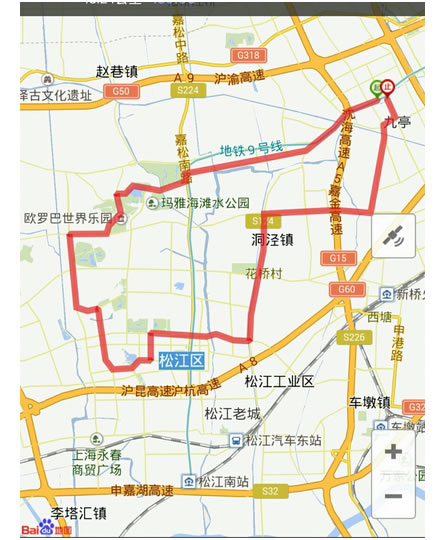

骑行俱乐部之佘山&泰晤士 出发
经过几天大伙的积极报名，现在周六骑行活动的最终名单如下， 如有小伙伴被遗漏了，请第一时间回复我邮件，谢谢！ 由于车店车辆有限，只能截止报名了。没有参加的小伙伴下次一定要在第一时间报名哈。^-^
谢杨易 路绪光 高贤虎 汪磊 张祺炜 夏柏琳
殷浩 杜斌 洪晓丽 张志阳 栗戈 沈诗律
李颖 林佳佳 尤雯 王鑫 姜庆荣 周徐萍
蒋丹红 王晗宇 王凯 侯丽娜 刘艳 王莉
许艳
活动注意事项：
1.集合地点：九亭大街捷安特专卖店（九亭大街261号），地铁9号线九亭站下，打的起步价即到。千万别跑到第一次活动地点，龙阳路去了哈
2.集合时间：5月16日上午10点
3.联系方式：谢杨易：13701646157
路绪光（领队）：18964953545
4.这个季节温度有点高了，穿轻便一点的衣服。
5.家属的保险和水俱乐部提供，租车费用需要自理。经过和车店的一番唇枪舌剑，小编帮同事们把价钱砍到了70元/车。
行程安排：
1. 上午10点集合，奔赴佘山，游完之后，直达辰山植物园。
2. 中午到达大学城，大家自行吃饭。休息片刻后，游玩大学城。之后直达泰晤士小镇
3. 泰晤士小镇游完之后骑回九亭。
